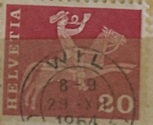
| SOURCE | TITLE| IMAGE MATCH | click to source page |
| Colnect | Switzerland : Stamps [Year: 1960] [1/8] : Colnect 📮 | 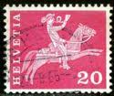 |
| Find Your Stamps Value | Federal Administration: Cathedral, Geneva 40c Lilac stamp price, value | 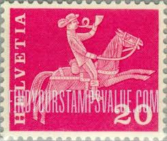 |
| Stampedia | stampedia SWITZERLAND STAMP catalog | 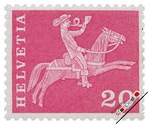 |
| HipStamp | 1960, Switzerland 20c, Used, Sc 385 | Europe - Switzerland, General Issue Stamp / HipStamp | 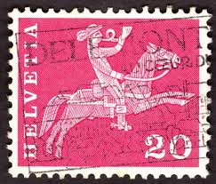 |
| eBay | Switzerland - 1960 - Definitive Issues - Postreiter - 20¢ - #2482 | eBay | 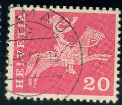 |
| Shutterstock | 2+ Hundred Messenger Horse Royalty-Free Images, Stock Photos & Pictures | Shutterstock | 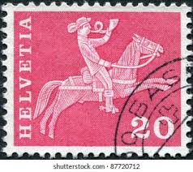 |
| Etsy | Vintage Switzerland Helvetia Stamp Collection - Etsy UK | 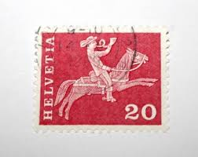 |
| commnet.edu | Rare Switzerland Stamps - Collectible Vintage Stamp Gallery | 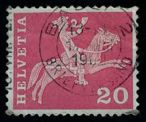 |
| allnumis.com | 20 Centimes - Postrider (19th century), Misc - Switzerland - Stamp - 50938 | 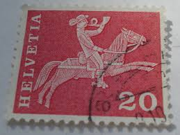 |
| 123RF | Swiss Stamp Stock Photos and Images - 123RF | 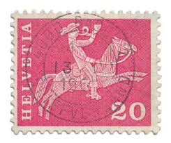 |
| 123RF | Saint Petersburg, Russia - May 05, 2020: Stamp Printed In The Switzerland With The Image Of The Post Rider, 19th Century, Circa 1960. Lizenzfreie Fotos, Bilder und Stock Fotografie. Image 146392372. | 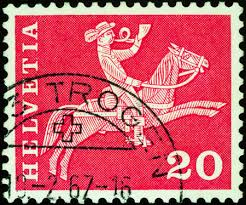 |
| iStock | Switzerland Stamp Stock Photo - Download Image Now - Black Background, Blowing, Brass Instrument - iStock | 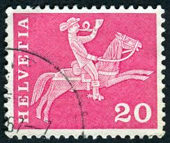 |
| Shutterstock | Modern Postage Stamp: Over 5,123 Royalty-Free Licensable Stock Photos | Shutterstock | 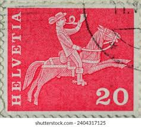 |
| Dict.cc | dict.cc | postilion | Übersetzung Deutsch-Englisch | 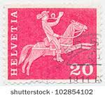 |
| eBay UK | Switzerland Helvetia Stamps | eBay UK | 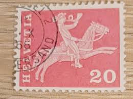 |
| Latinafy | Helvetia 80 Stamp | 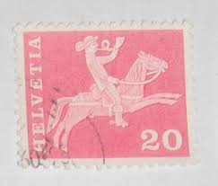 |
| Shutterstock | Karnal Haryana India -august 8th 2025-closeup Stock Photo 2674433345 | Shutterstock | 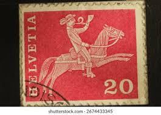 |
| Dreamstime.com | Swiss Postage Stamps on Envelope Editorial Photo - Image of helvetia, illustrative: 149672111 | 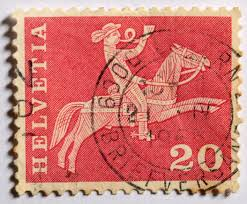 |
| Flickr | Mid Century Modern - Sticker, Label + Stamp Club | Flickr | 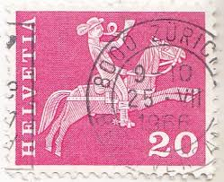 |
| Dreamstime.com | Red Helvetia Stamp Postage Stamp from Switzerland Editorial Image - Image of horse, horseback: 301479770 | 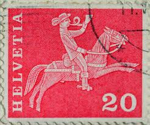 |
| Pngtree | St Vincent Stamp Correspondence Stamp Postage Photo Background And Picture For Free Download - Pngtree | 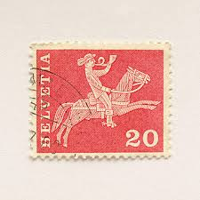 |
| iStock | Helvetia Postage Stamp Stock Photo - Download Image Now - Mail, Switzerland, Art Product - iStock | 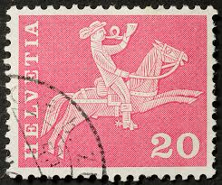 |
| Todocolección | suiza helvetia 40 c. railway año 1942. - Buy Antique stamps of Switzerland on todocoleccion | 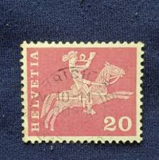 |
| Dreamstime.com | Postrider Stock Photos - Free & Royalty-Free Stock Photos from Dreamstime | 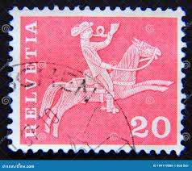 |
| Shutterstock | Switzerland Circa 1960 Stamp Printed Switzerland Stock Photo 96862255 | Shutterstock | 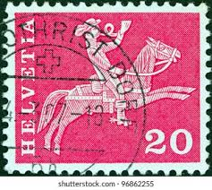 |
| 900+ Switzerland Stamps ideas | switzerland, postage stamps, stamp | 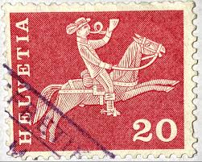 | |
| Todocolección | sello helvetia suiza 50 basel - Buy Antique stamps of Switzerland on todocoleccion | 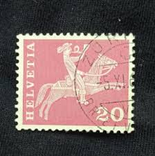 |
| Alamy | Post rider blowing hi-res stock photography and images - Alamy | 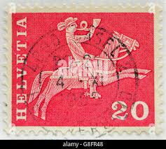 |
| Fine Art America | Horseback Mail Delivery Rider Blowing Postal Horn Art Print by Jim Pruitt - Fine Art America | 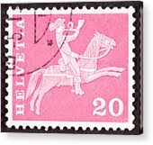 |
| Jace Stamps | Switzerland Scott 384 Used - C$0.19 : Jace Stamps, Quality Stamps since 1997 | 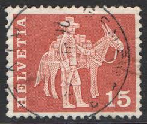 |
| ebid.net | NORTH KOREA, Gold crown, Silla Dynasty, pink 1977, 50chon bei eBid Österreich | 204718330 | 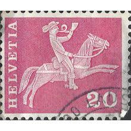 |
| iStock | Swiss Postage Stamp Horseback Mail Delivery Rider Blowing Postal Horn Stock Photo - Download Image Now - iStock | 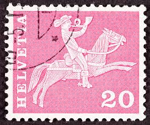 |
| eBay | Switzerland, Perforated Stamp NC, Canceled, PERFIN STAMP | eBay | 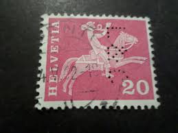 |
| YouTube | Postage stamp. Helvetia. A rider on a horse blowing a bugle. Price 20 - YouTube | 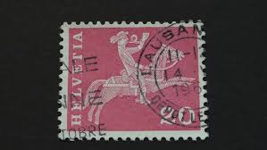 |
| Shutterstock | Helvetia Switzerland Postage Stamp On Black Stock Photo 15930535 | Shutterstock | 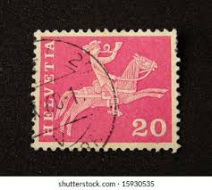 |
| iStock | Helvetia Sello Postal Foto de stock y más banco de imágenes de Correos - Correos, Suiza, Anticuado - iStock | 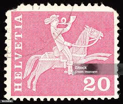 |
| Dreamstime.com | SWITZERLAND - CIRCA 1924: Postal Stamp 90 Swiss Centimes Printed by Swiss Confederation, Shows Swiss Coat of Arms Editorial Image - Image of green, europe: 301563560 | 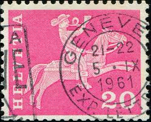 |
| eBay | Switzerland MiNr. 1062-1066 used (Ai 941) | eBay | 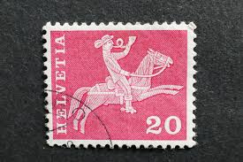 |
| Shutterstock | 2+ Thousand Helvetia Old Postage Stamp Royalty-Free Images, Stock Photos & Pictures | Shutterstock | 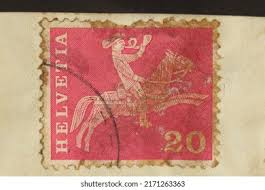 |
| Shutterstock | 2+ Thousand Messenger Motivation Royalty-Free Images, Stock Photos & Pictures | Shutterstock | 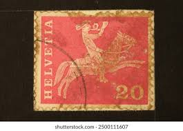 |
| iStock | Iceland Horse Stamp Stock Photo - Download Image Now - Animal, Antique, Close-up - iStock | 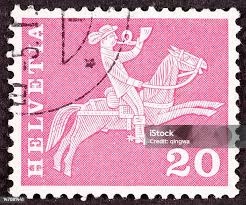 |
| Shutterstock | Switzerland Circa 1960 Stamp 20 Swiss Foto de stock 1945285555 | Shutterstock | 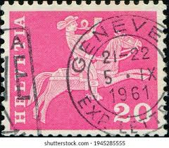 |
| HipStamp | Switzerland 1960-76 Early Issue Fine Used 20h. NW-129744 | Europe - Switzerland, Stamp / HipStamp | 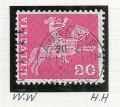 |
| Dreamstime.com | 102 Switzerland Stamp Person Stock Photos - Free & Royalty-Free Stock Photos from Dreamstime | 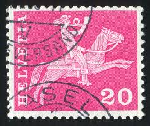 |
| Shutterstock | 382 Horse Postman Vintage Royalty-Free Images, Stock Photos & Pictures | Shutterstock | 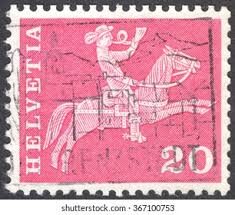 |
| Dreamstime.com | Postrider Del Siglo XIX, Serie De Motivos E Monumentos De La Historia Postal, Circa 1960 Foto de archivo editorial - Imagen de colección, herencia: 141535993 | 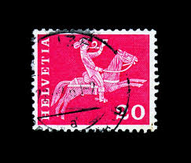 |
| Alamy | Postage stamp stamps switzerland hi-res stock photography and images - Alamy | 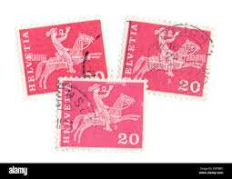 |
| Picxy | Image of Swiss Stamp Of Switzerland (European Union)-VB420805-Picxy | 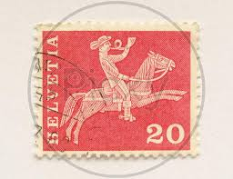 |
| Todocolección | suiza viñetas militares. - Buy Antique stamps of Switzerland on todocoleccion | 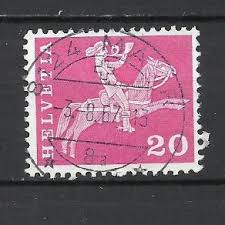 |
| Pin by myantiquecoins on Stamp | Stamp | ||
| eBay | Switzerland - 1977 - 10¢ - Definitive Issues - #18249 | eBay | |
| eBay | 20 Used Switzerland Postage Stamps from 1908 to 1963 | eBay | |
| Etsy | Stamp Helvetia - Etsy | |
| Todocolección | suiza -valor facial 20 - año 1960 - correo, men - Compra venta en todocoleccion | |
| eBay | SWITZERLAND STAMP MNH [SALE] [Choose 10pc of MINT is $3.5] unused WM8877 | eBay | |
| PicClick UK | SWITZERLAND FREE POSTAGE 1911 5I Block Of Four ** Mint In Perfect Condition (... £2.53 - PicClick UK | |
| great stamp Helvetia Swiss 10c Suisse Switzerland stamp Briefmarke Schweiz Marka Timbre \ | ||
| eBay | SWITZERLAND/SCHWEIZ 1960 15c & 20c ORDINARY PAPER. ABARTEN ZUM. 357 & 358.1.09 | eBay | |
| Attias, CH | DX - UPU Universal Postal Union Bern | Philatelie Attias, CH-5620 Bremgarten AG | |
| eBay | switzerland 1911/30 block of twelve (5c x 10,Sc 168,10x 2,Sc 169) p2176 | eBay |